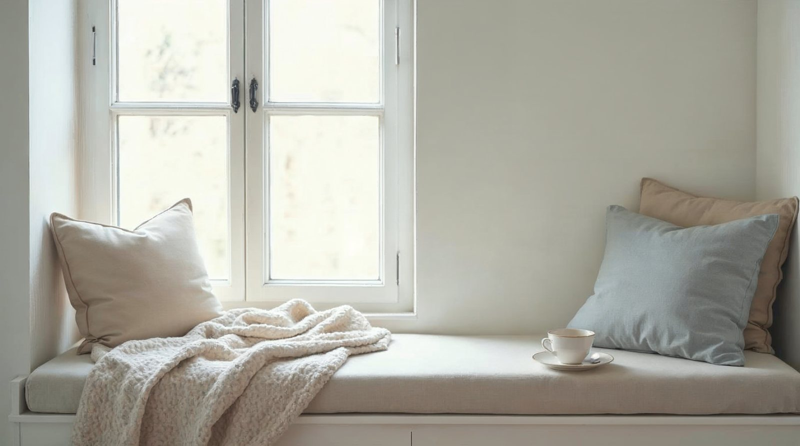
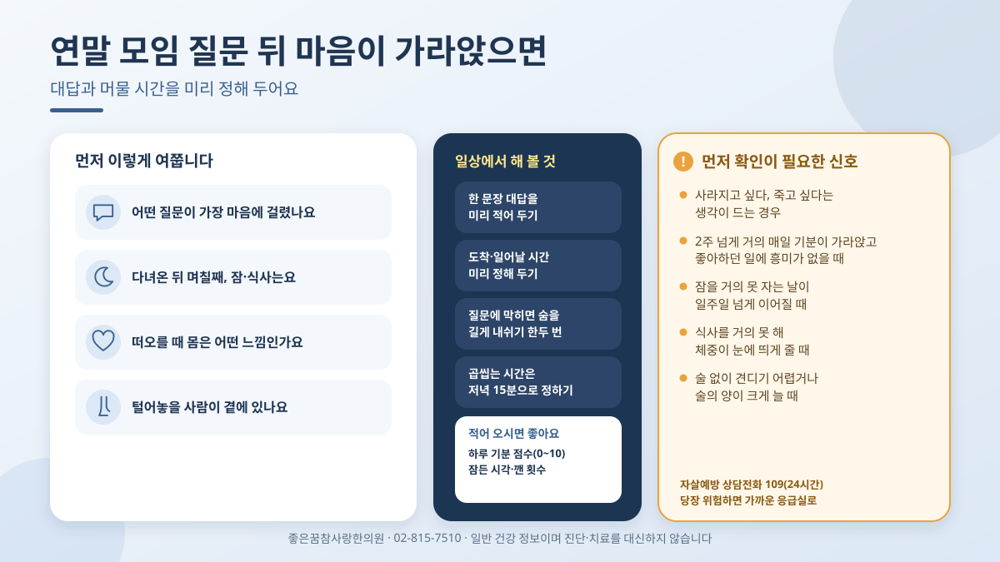

이종호 한의사 감수좋은꿈참사랑한의원 대표원장 (한의사 면허번호 19769)발행 2026-11-27 · 수정 2026-11-27
이 글의 차례
연말이 되면 오랜만에 친척이 모이는 자리, 동창 송년회, 회사 사람들과의 저녁처럼 근황을 묻는 자리가 잦아집니다.
그 자리에서 '취업은 했니', '결혼은 언제 하니', '집은 장만했어', '연봉은 좀 올랐어', '시험은 언제 붙니' 같은 말을 들으면, 웃으며 넘기려 해도 가슴이 콱 막히고 얼굴이 굳으며, 집에 돌아와서는 그 장면이 계속 떠올라 잠이 얕아지고 며칠씩 기분이 가라앉는 분이 많습니다.
묻는 사람에게 큰 뜻이 없더라도, 내가 이미 마음속으로 오래 붙들고 있던 고민을 사람들 앞에서 건드리기 때문에 크게 흔들리는 것입니다. 이런 반응은 약해서 생기는 것이 아니라, 중요한 문제를 진지하게 고민하는 사람에게 흔히 나타나는 자연스러운 마음입니다.
그래서 모임 전에는 한두 문장의 대답과 화제를 돌릴 말, 머물 시간을 정해 두고, 모임 중에는 잠깐씩 숨 돌릴 틈을 만들며, 다녀온 뒤에는 곱씹는 시간을 따로 정하고 잠과 몸의 긴장부터 돌보는 순서를 권합니다. 2주 넘게 잠과 입맛이 돌아오지 않거나, 아무것도 하기 싫고 사라지고 싶다는 생각이 든다면 혼자 견디지 말고 109에 도움을 청하세요.
왜 근황 질문 하나에 마음이 크게 흔들릴까요
- 취업, 결혼, 집, 시험 같은 주제는 이미 혼자서 오래 고민해 온 문제인 경우가 많습니다. 스스로도 답을 찾지 못한 질문을 여러 사람 앞에서 받으면, 질문 하나가 그동안의 걱정을 한꺼번에 불러냅니다.
- 친척이나 동창 모임은 자연스럽게 서로를 견주게 되는 자리입니다. 다른 사람의 승진, 결혼, 이사 소식이 이어지면 내 자리만 멈춰 있는 듯한 느낌이 들기 쉽습니다.
- 연말은 한 해를 돌아보는 시기라 이미 마음속으로 스스로를 평가하고 있는 때입니다. 그 위에 바깥의 질문이 더해지면 같은 말도 더 무겁게 들립니다.
- 술자리에서는 말이 거칠어지고 질문이 꼬리를 물기 쉬우며, 웃어넘기느라 감정을 누르다 보면 몸에 긴장이 쌓입니다. 어깨와 턱에 힘이 들어가고, 명치가 답답하며, 밥이 잘 넘어가지 않는 분이 많습니다.
- 노량진에서 오래 시험을 준비하는 수험생처럼 평소 사람을 만날 기회가 적은 분은 오랜만의 모임에서 받는 질문이 더 크게 다가오고, 돌아와서도 털어놓을 사람이 없어 혼자 곱씹기 쉽습니다.
- 집에 돌아와 혼자가 되면 그때 했어야 할 대답, 상대의 표정, 내 말투를 되풀이해 떠올리게 됩니다. 같은 장면을 곱씹을수록 잠자리에서도 머리가 쉬지 못합니다.
- 해가 짧아 바깥 빛을 덜 보고 실내에 머무는 시간이 늘어나는 겨울에는 기분이 가라앉기 쉬운데, 그 위에 마음에 걸리는 말이 얹히면 회복이 더뎌지기도 합니다.
- 한의학에서는 하고 싶은 말을 삼키고 마음이 뜻대로 펴지지 못할 때 기운이 가슴에 맺혀 답답하고 한숨이 잦아지는 모습을 간기울결로 설명합니다. 생각이 많고 걱정이 길어지면 비위가 지쳐 입맛이 떨어지고, 마음이 편히 쉬지 못해 잠이 얕아진다고 보기도 합니다.

먼저 이렇게 여쭙니다
- 어떤 모임에서 어떤 질문이 가장 마음에 걸렸는지, 말한 사람과는 어떤 사이인지 여쭙니다.
- 모임을 다녀온 뒤 기분이 가라앉은 것이 며칠째인지, 그동안 잠과 식사는 어떻게 달라졌는지 여쭙니다.
- 그 장면이 하루에 몇 번쯤 떠오르는지, 떠오를 때 몸에서 어떤 느낌(가슴 답답함, 얼굴 화끈거림, 두근거림, 명치 막힘)이 드는지 여쭙니다.
- 앞으로 남은 모임 일정이 있는지, 그 생각만으로 미리 긴장되는지 여쭙니다.
- 고민을 털어놓을 수 있는 사람이 있는지, 가족과 이 이야기를 나눴는지 여쭙니다.
- 술이나 커피, 단 음식이 늘었는지, 휴대폰을 보며 늦게 잠드는지 여쭙니다.
- 예전에도 비슷한 시기마다 마음이 크게 가라앉은 적이 있는지 여쭙니다.
- 아무것도 하기 싫거나 사라지고 싶다는 생각이 든 적이 있는지도 조심스럽게 여쭙니다.
일상에서 먼저 해 볼 수 있는 것
모임 전: 대답과 시간 정해 두기
- 자주 나올 질문 두세 가지를 떠올리고, 각각에 한 문장으로 답할 말을 미리 적어 둡니다. 예를 들어 '지금 준비하고 있어요, 정해지면 말씀드릴게요'처럼 짧고 사실만 담은 말이면 충분합니다. 자세히 설명하지 않아도 됩니다.
- 대답 뒤에 이어 붙일 화제 전환 질문도 하나 준비합니다. 상대의 요즘 취미나 건강, 함께 먹는 음식 이야기처럼 가벼운 질문이면 됩니다.
- 언제 도착해 언제 일어날지 미리 정합니다. 처음 도착했을 때 '오늘은 9시쯤 일어날게요'라고 말해 두면 자리를 뜨기 쉽습니다.
- 마음이 편한 사람 한 명을 미리 정해 그 사람 근처에 앉거나, 함께 가는 가족에게 화제를 돌려 달라고 부탁해 둡니다.
- 모임 전날에는 평소 시각에 잠들고, 당일에는 끼니를 거르지 않습니다. 지치고 배고픈 상태에서는 작은 말에도 더 크게 흔들립니다.
모임 중: 숨 돌릴 틈 만들기
- 질문을 받아 가슴이 막히면 대답하기 전에 코로 천천히 들이마시고, 들이마신 시간보다 길게 입으로 내쉬는 숨을 한두 번 쉽니다. 짧은 틈이지만 말이 덜 날카롭게 나옵니다.
- 한 시간에 한 번쯤 화장실에 가거나 바깥 공기를 쐬러 잠깐 자리를 비웁니다. 2~3분이라도 혼자 있는 시간이 긴장을 덜어 줍니다.
- 술잔이 계속 채워지면 물이나 따뜻한 차로 바꿉니다. 술이 들어갈수록 질문은 거칠어지고, 내 감정도 다스리기 어려워집니다.
- 대답하기 싫은 질문에는 '그 이야기는 다음에 할게요'처럼 정중하게 선을 긋는 말을 해도 괜찮습니다.
다녀온 뒤: 곱씹는 시간 정하기
- 집에 돌아오면 따뜻한 물로 씻고 편한 옷으로 갈아입는 것으로 모임을 마무리하는 신호를 몸에 줍니다.
- 그날 마음에 걸린 말을 종이에 한 번 적고, 그 말에 대한 내 생각을 두세 줄로 적은 뒤 덮어 둡니다. 머릿속에서만 돌리면 같은 장면이 계속 되풀이되기 쉽습니다.
- 다음 날부터는 저녁 식사 뒤 15분처럼 곱씹는 시간을 정하고, 다른 시간에 떠오르면 '저녁에 보자'며 넘깁니다. 이 시간은 잠자리에 드는 시각과 두 시간 이상 떨어지게 잡습니다.
- 모임 다음 날 일정은 가볍게 잡고, 오전에 20~30분 바깥을 걷습니다. 상도동처럼 언덕이 많은 동네라면 평지 위주로 천천히 걸어도 충분합니다. 해가 짧은 겨울에는 낮에 햇빛을 보는 것이 기분과 잠의 리듬을 잡는 데 보탬이 됩니다.
- 질문한 사람의 말을 한 번 다시 풀어 봅니다. 걱정에서 나온 말인지, 그냥 할 말이 없어 꺼낸 말인지 생각해 보면 내 가치를 평가한 말이 아닌 경우가 많습니다.
- 믿을 만한 한 사람에게 '이런 말을 들어서 마음이 좀 무거웠다'고 이야기합니다. 해결책을 듣지 않아도 말로 꺼내는 것만으로 생각이 정리되기도 합니다.
- 다녀온 날 밤 SNS로 다른 사람들의 모임 사진과 소식을 이어서 보는 것은 며칠 쉬어 봅니다.
몸의 긴장 풀기
- 따뜻한 수건을 목과 어깨에 5분쯤 얹어 굳은 근육을 데웁니다.
- 두 손바닥을 비벼 따뜻하게 한 뒤 명치 위에 얹고, 배가 부풀었다 꺼지는 것을 느끼며 천천히 열 번 숨을 쉽니다.
- 명치가 답답한 날에는 식사를 평소보다 조금 덜고, 기름진 음식과 술을 줄이며 천천히 꼭꼭 씹어 먹습니다.
상황별 예시
- 예를 들어 노량진에서 몇 년째 시험을 준비하는 수험생이 연말 친척 모임에서 언제 붙느냐, 다른 길은 생각해 보지 않았느냐는 말을 연달아 듣고, 돌아온 뒤 사흘째 공부가 손에 잡히지 않고 밤마다 그 장면만 떠오르는 경우, 그 말을 종이에 적고 내 생각을 두세 줄 덧붙인 뒤 덮어 두고, 곱씹는 시간을 저녁 15분으로 정해 봅니다. 다음 모임에서는 '지금 준비 중이고, 결과 나오면 말씀드릴게요'라는 한 문장과 머물 시간을 미리 정해 둡니다.
- 예를 들어 30대 직장인이 동창 송년회에서 친구들의 결혼과 집 마련 소식을 듣고, 연봉과 결혼 계획을 묻는 질문에 웃어넘겼지만 집에 와서 한숨이 끊이지 않고 명치가 답답해 저녁을 거른 경우, 그날 밤은 따뜻한 물로 씻고 휴대폰을 거실에 둔 채 일찍 눕고, 다음 날 오전에 바깥을 30분 걸어 봅니다. 동창들의 SNS를 며칠 쉬는 것도 방법입니다.
- 예를 들어 가게를 운영하는 자영업자가 연말 가족 모임에서 올해 장사와 앞으로의 계획을 묻는 말에 대답하다 언성이 높아진 뒤, 며칠째 그때 했던 말을 후회하며 잠이 얕은 경우, 불편했던 마음을 가까운 가족 한 사람에게 차분히 이야기해 보고, 다음 모임에서는 가게 이야기가 나오면 화제를 돌릴 말을 미리 준비해 둡니다.
- 예를 들어 연말 모임 이후 3주가 넘도록 하루 서너 시간밖에 못 자고, 좋아하던 일에도 흥미가 없으며, 나는 쓸모가 없다는 생각이 계속 드는 경우에는 생활 조절만으로 혼자 버티기보다 진료실에서 맥을 짚고 잠과 소화, 몸의 긴장을 함께 살펴보시길 권합니다.
자주 하는 오해
- 이런 말에 상처받는 건 내가 예민해서라고 자책하는 분이 많지만, 오래 고민해 온 문제를 사람들 앞에서 건드리면 누구라도 흔들릴 수 있습니다.
- 질문에 자세하고 그럴듯하게 대답해야 체면이 선다고 여기기 쉽습니다. 짧게 사실만 말하고 화제를 돌려도 충분하며, 대답하지 않아도 괜찮습니다.
- 모임을 피하면 해결된다고 생각해 모든 자리를 거절하는 분도 있습니다. 힘든 자리는 줄이되, 편한 사람과의 만남까지 끊으면 외로움이 커질 수 있어 자리를 골라 나가는 편이 좋습니다.
- 시간이 지나면 저절로 잊힌다고 여기며 그냥 참는 분도 있습니다. 대개는 그렇지만, 곱씹기가 2주 넘게 이어지고 잠과 입맛이 흔들린다면 도움을 받는 편이 좋습니다.
- 마음의 문제니 몸과는 상관없다고 여기기 쉽지만, 긴장이 이어지면 가슴 답답함, 두통, 소화 불량, 어깨 결림처럼 몸으로 먼저 드러나는 경우가 많습니다.
스스로 점검해 보세요
- 모임 날짜가 잡히면 며칠 전부터 마음이 무겁다.
- 모임에서 받은 질문이 하루에도 여러 번 떠오른다.
- 모임 뒤 잠들기까지 30분 넘게 걸리는 날이 이어진다.
- 그날 했어야 할 대답을 머릿속으로 계속 고쳐 말해 본다.
- 모임 뒤 명치가 답답하거나 입맛이 떨어진다.
- 다른 사람의 소식을 들으면 내 처지와 견주며 스스로를 깎아내리게 된다.
- 이 마음을 털어놓을 사람이 없다고 느낀다.
한의원에서 함께 살필 수 있는 경우
- 모임 뒤 가라앉은 기분과 함께 잠이 얕고 새벽에 자주 깨는 날이 이어지는 경우
- 가슴이 답답하고 한숨이 잦으며, 명치가 막힌 듯 밥이 잘 넘어가지 않는 경우
- 긴장하면 어깨와 뒷목이 굳고 두통이 반복되는 경우
- 마음과 몸의 변화를 함께 정리하며 겨울을 지내고 싶은 경우
좋은꿈참사랑한의원에서는 첫 방문 때 어떤 일이 마음에 걸렸는지를 편하게 말씀하실 수 있도록 천천히 여쭙고, 그 뒤로 잠과 식사, 대소변, 몸의 긴장이 어떻게 달라졌는지를 차례로 정리합니다. 모임에서 있었던 일을 자세히 말씀하지 않으셔도 되고, 편하신 만큼만 이야기하시면 됩니다.
그다음 맥부터 짚어 보고, 혀의 색과 설태, 배를 눌러 명치와 옆구리 아래가 단단하게 뭉쳐 있는지 살펴 기운이 가슴에 맺혀 있는지, 소화 기운이 지쳐 있는지 확인합니다. 그 결과를 바탕으로 잠과 생활 리듬에서 무엇부터 바꿀지 함께 정하고, 필요하면 침이나 한약을 상의합니다. 이미 다니는 병원이 있다면 그 진료를 이어 가면서 상의합니다.
다음 진료에서는 지난번 나눈 이야기를 이어서 여쭙고, 그사이 잠과 마음이 어떻게 흘러갔는지 함께 짚어 봅니다.
얼마나 지켜보고 언제 상담할까요
- 모임 뒤 며칠 마음이 무겁다가 일주일 안팎으로 잠과 입맛이 돌아온다면, 지금의 방법을 이어 가며 지켜봅니다.
- 2주가 지나도 곱씹기가 하루 여러 번 이어지고 잠이 얕거나, 일과 공부가 손에 잡히지 않는다면 상담을 받아 보세요.
- 연말연시 모임이 줄줄이 남아 있어 미리부터 잠이 흔들린다면, 일정이 다 끝나기를 기다리지 말고 그 전에 상의해도 됩니다.
- 아래 신호가 있으면 지켜보지 말고 도움을 먼저 청합니다.
이렇게 기록해 오시면 상담이 쉬워집니다
- 모임 날짜와 마음에 걸린 말(적기 편한 만큼)
- 그 뒤 하루하루의 기분을 0~10으로 적은 기록
- 잠든 시각, 깬 시각, 밤중에 깬 횟수
- 식사량 변화와 명치 답답함, 두통, 어깨 결림 같은 몸의 변화
- 남은 모임 일정
- 복용 중인 약, 다니는 병원이나 상담 기관이 있다면 그 내용
이런 증상은 먼저 확인이 필요합니다
- 사라지고 싶다, 죽고 싶다는 생각이 들거나 그 방법을 떠올리게 되는 경우
- 2주 넘게 거의 매일 기분이 가라앉고, 좋아하던 일에도 흥미가 없는 경우
- 스스로를 해칠 생각이 들면 ☎ 109로 바로 연락하세요.
이런 신호가 있으면 한의원보다 가까운 병원이나 응급실을 먼저 찾으세요.
관련 글
- 졸업을 앞두고 취업 준비로 불안해서 가슴이 두근거리고 잠이 안 올 때는 어떻게 살피나요?
- 불안한 마음과 몸이 긴장한 느낌은 어떻게 나눠서 이야기하나요?
- 걱정이 많아서 잠이 안 올 때는 어떻게 살피나요?

여쭙는 것
- 어떤 모임에서 어떤 질문이 가장 마음에 걸렸는지, 말한 사람과는 어떤 사이인지 여쭙…
- 모임을 다녀온 뒤 기분이 가라앉은 것이 며칠째인지, 그동안 잠과 식사는 어떻게 달라…
- 그 장면이 하루에 몇 번쯤 떠오르는지, 떠오를 때 몸에서 어떤 느낌(가슴 답답함,…
생활에서 해 볼 것
- 자주 나올 질문 두세 가지를 떠올리고, 각각에 한 문장으로 답할 말을 미리 적어 둡…
- 대답 뒤에 이어 붙일 화제 전환 질문도 하나 준비합니다. 상대의 요즘 취미나 건강,…
- 언제 도착해 언제 일어날지 미리 정합니다. 처음 도착했을 때 '오늘은 9시쯤 일어날…
한의원에서 함께 살필 것
- 모임 뒤 가라앉은 기분과 함께 잠이 얕고 새벽에 자주 깨는 날이 이어지는 경우
- 가슴이 답답하고 한숨이 잦으며, 명치가 막힌 듯 밥이 잘 넘어가지 않는 경우
- 긴장하면 어깨와 뒷목이 굳고 두통이 반복되는 경우
먼저 확인이 필요한 신호
- 사라지고 싶다, 죽고 싶다는 생각이 들거나 그 방법을 떠올리게 되는 경우
- 2주 넘게 거의 매일 기분이 가라앉고, 좋아하던 일에도 흥미가 없는 경우
- 스스로를 해칠 생각이 들면 109로 바로 연락하세요.
한눈에 보는 표
| 구분 | 핵심 |
|---|---|
| 여쭙는 것 | 어떤 모임에서 어떤 질문이 가장 마음에 걸렸는지, 말한 사람과는 어떤 사이인지 여쭙니다. 모임을 다녀온 뒤 기분이 가라앉은 것이 며칠째인지, 그동안 잠과 식사는 어떻게 달라졌는지 여쭙니다. |
| 생활에서 해 볼 것 | 자주 나올 질문 두세 가지를 떠올리고, 각각에 한 문장으로 답할 말을 미리 적어 둡니다. 예를 들어 '지금 준비하고 있어요, 정해지면 말씀드릴게요'처럼 짧고 사실만 담은 말이면 충분합니다. 자세히 설명하지 않아도 됩니다. 대답 뒤에 이어 붙일 화제 전환 질문도 하나 준비합니다. 상대의 요즘 취미나 건강, 함께 먹는 음식 이야기처럼 가벼운 질문이면 됩니다. |
| 한의원에서 함께 살필 것 | 모임 뒤 가라앉은 기분과 함께 잠이 얕고 새벽에 자주 깨는 날이 이어지는 경우 가슴이 답답하고 한숨이 잦으며, 명치가 막힌 듯 밥이 잘 넘어가지 않는 경우 |
| 먼저 확인이 필요한 신호 | 사라지고 싶다, 죽고 싶다는 생각이 들거나 그 방법을 떠올리게 되는 경우 2주 넘게 거의 매일 기분이 가라앉고, 좋아하던 일에도 흥미가 없는 경우 |
자주 묻는 질문
질문을 받을 때마다 화가 나는데, 제가 너무 예민한 걸까요?
오래 고민해 온 주제를 사람들 앞에서 건드리면 화나거나 서운한 마음이 드는 것은 자연스러운 반응입니다. 그 마음을 억누르기보다 짧게 대답하고 잠시 자리를 비우는 방법을 미리 정해 두면 덜 흔들릴 수 있습니다.
올해는 모임에 아예 가지 않아도 될까요?
마음이 많이 지쳐 있다면 힘든 자리는 줄여도 괜찮습니다. 다만 모든 만남을 끊기보다 편한 사람과의 자리는 골라 나가고, 가지 않을 자리에는 짧게 안부를 전해 두면 마음의 짐이 덜할 수 있습니다.
다녀온 뒤 계속 곱씹게 되는 건 어떻게 멈추나요?
생각을 억지로 멈추려 하면 오히려 더 떠오르기 쉽습니다. 마음에 걸린 말을 종이에 적어 덮어 두고, 하루 15분 정도 곱씹는 시간을 정해 그 밖의 시간에는 미뤄 두는 방법을 2주쯤 이어 가 보세요.
한의원에서는 마음이 힘든 것을 어떻게 살피나요?
어떤 일이 있었는지와 잠, 식사, 몸의 긴장을 함께 여쭙고 맥부터 짚어 봅니다. 혀와 배를 살펴 몸에 남은 긴장과 소화 상태를 확인하고, 생활에서 바꿀 것을 함께 정하며 필요하면 침이나 한약을 상의합니다.
지금 먹고 있는 약이 있는데 한의원 진료를 같이 받아도 되나요?
함께 받으셔도 됩니다. 드시는 약의 이름과 용량을 처음 오실 때 알려 주시면 그에 맞춰 상의하고, 약은 처방한 의사와 상의 없이 줄이거나 끊지 않습니다.
좋은꿈참사랑한의원은 재진 때 지난번 이야기부터 이어서 여쭙니다. 진료시간과 예약은 오시는 길에서 확인하세요.
어디서 상담받을 수 있나요?
좋은꿈참사랑한의원은 서울 동작구 만양로2길 2 신성빌딩 3층·5층(서울 동작구 상도동, 7호선 상도역 3번 출구 근처)에 있습니다. 한의사 3명(이종호 대표원장, 조영기 수석진료원장, 정원영 진료원장)이 진료합니다. 진료시간은 평일 09:30~20:00(점심 13:00~14:00), 토·일·공휴일 09:30~15:00이며, 방문 전 전화로 확인을 권합니다. 예약은 네이버 예약, 카카오톡 상담, 전화 02-815-7510로 받습니다.
이 글은 일반적인 건강 정보이며 개인의 진단이나 치료를 대신하지 않습니다. 증상이 있거나 복용 중인 약이 있다면 진료를 통해 확인하세요. 치료 효과는 개인마다 다를 수 있습니다.
작성 기준: 일반적으로 알려져 있는 건강 정보를 참고해 정리했습니다(대표원장 감수). 증상 기록은 1~2주 동안 하루 1회, 비슷한 시간에 적어 오시면 지난 상태와 비교하기 쉽습니다.